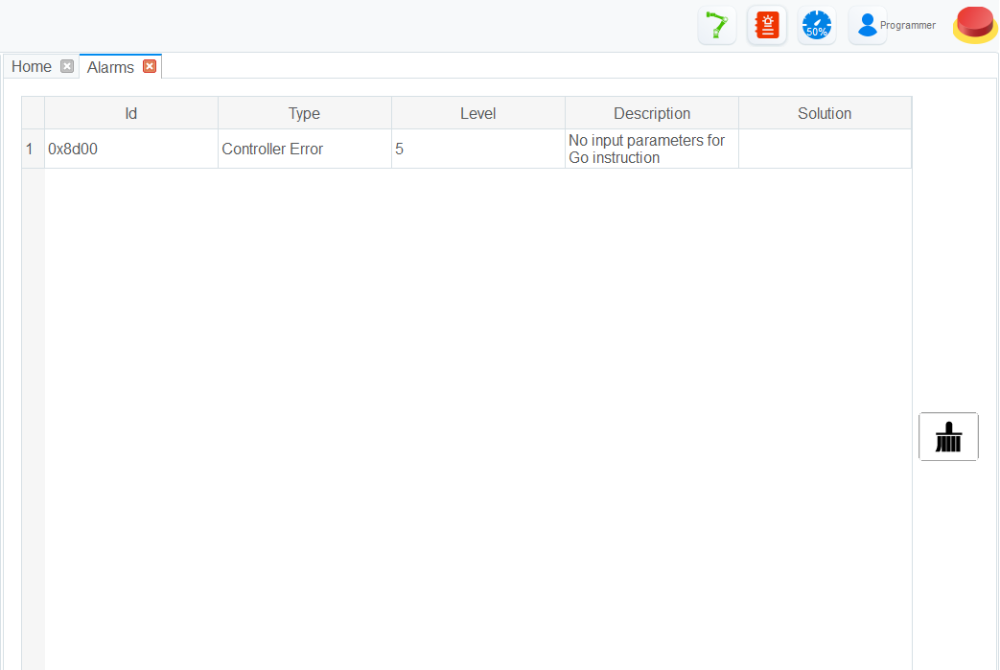

Control Bar
The control bar at the top right of the application contains the most important ways on controlling your cobot. It consists of a series of buttons that interact with critical functions on your cobot.
Contents
Enable/Disable Cobot
This button displays the enabled state of the robot. When the button is green, the cobot is enabled and can be controlled. When the button is red, the cobot is disabled and must be enabled before it is able to be controlled.
When the button is pressed to enable the cobot, you will be presented with the Point Load Specification Menu asking you to specify the point load of your end effector or workpiece. Once you have filled out all fields of the menu and pressed OK, the robot will startup and move around a bit, finally settling in a static state, and the button will be green, indicating that the robot is now in its enabled state.
Alarms
This button brings a menu that displays any active alarms, a description, and potential solutions. Once you have solved the issue that caused the alarms, press the clear button to re-enable your cobot.
The button will blink red if there is an active alarm.
Speed Ratio
This button brings up a menu where you can specify the global speed ratio for the cobot. Calculating the actual speed during various modes of operation is as follows:
Actual Jogging Velocity = Max Jogging Velocity * Global Velocity Rate
Actual Jogging Acceleration = Max Jogging Acceleration * Global Velocity Rate
Actual Playback Velocity = Max Playback Velocity * Global Velocity Rate * Velocity Function Velocity Rate
Actual Playback Acceleration = Max Playback Acceleration * Global Velocity Rate * Acceleration Function Acceleration Rate
Actual Playback Jerk = Max Playback Jerk * Global Velocity Rate * Jerk Function Acceleration Rate
Authority
Allows you to specify the authority and permissions that the active user should have. These levels and their permissions are below:
- Watcher: check the system status, I/O status, robot pose, and alarms
- Operator: Operate a robot based on the existing scripts without programming
- Programmer: On the basis of operator authority, you can program and teach
- Manager: On the basis of programmer authority, you can set or modify parameters
The default password for all roles is admin or 000000. This can be modified in the
ToolConfig > BasicConfig > UserMode menu when the authority is set to Manager.
Emergency Stop
In an emergency, press and hold this button. This will stop and power down all motors and an emergency brake will be activated.